Use this page with an installed application. The exact controls depend on the application capability profile and release. Check release status for availability.
On this page
One change, four clear steps
request
→ review and approval
→ change
→ check and record
The order matters. An application can suggest work without gaining permission to do it. A change can also fail its checks. StatePort keeps both outcomes visible.
Read the proposal
Before approval, check the requested outcome, current base revision, files or operations in scope, side-effect class, authority, and budget. A proposal is an exact review object. If its base or content changes, the old approval should no longer apply.
For a template import, review the detected adapter, exact commit, working-tree status, and inspection findings before choosing Create isolated copy. For a run, review the operation list and validation plan. A receipt is created after the operation; it does not turn an unreviewed action into a reviewed one.
Permissions should be specific
You can allow routine, reversible work without approving every small step. Deleting data, spending money, publishing content, or contacting another service should stop for a fresh decision. An application cannot give itself more access.
Cancel and recover deliberately
Use Cancel on the selected workload when you need to interrupt it. Read the confirmation: in-progress output may be incomplete, and cancelled work is not automatically resumed. A stopped workspace can usually be started again; a cancelled operation needs a fresh request.
When the execution host offers Recover application workspace, recovery reuses the sealed profile and reattaches preserved data. It refuses to overwrite existing or partially initialized data. If provider work must stop, Disconnect StatePort stops active assistant processing and cancels queued requests while leaving the transcript available.
Stay in control without watching every step
Routine work can continue while you supervise it. You should be able to pause, redirect, or stop the application. StatePort asks for approval when the consequences justify it.
Change records answer simple questions
- What was requested?
- Who approved it?
- What did the application do?
- Did the checks pass?
- What still needs attention?
A clear record does not make a bad decision good. It makes the decision easier to inspect and correct.
Blocked work should be clear
If StatePort cannot continue safely, it should stop and tell you why. Read-only or unavailable modes should always include a useful next step.
